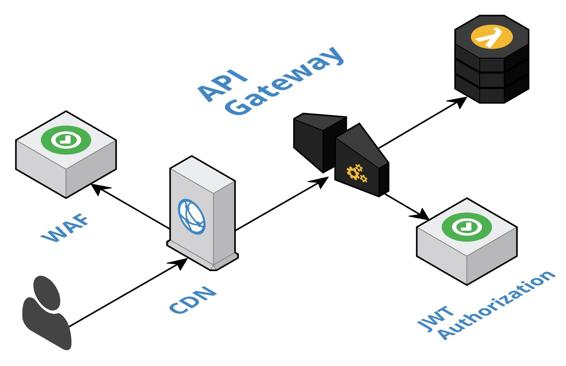

API Gateway
Leverage a fully managed API gateway to create a barrier at the boundaries of a cloud-native system by pushing cross-cutting concerns, such as security and caching, to the edge of the cloud where some load is absorbed before entering the interior of the system.
